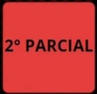
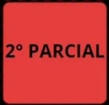
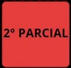
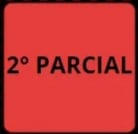

 

La pagina del deforma de ve mas confiable y veridical for en promer logar nos mencionca qoven la cocribito y cuando la escribio. Por otra parte tambien tene argomentos con ba ccals respaldar oo notecia, eso hace que sea mucho mas interesante. En caso de la segonda la de ki reforma no se ve tan confiable, apesar de que trene Goren la escribio, cuando y donde la escribie, esto es por auc ool da un comentario pero de ahí no tiene con que explicar o defender so noticia, a parte se moestran /imagenes y otras como las coales no tienen mach goe ver con ead.
Pues respecto a las tecnologicas to cordad es que es agradable Por que al smente de reale las tareas tonemos la herramienta del internet y loo boscadores entonces hoo facilita mas el aprendizale you are cuando no entendemos algo podoncs recorts a ellos youmplemente Mos do cl are yo to Fuerente para elaborar trabajos bien hechos, por otro lado me serce también para entrar a distintas apirogetones, una de ellas accuteloro es para entrenar en of fotbol y para hacer ejercicio, co por eso que me gusta la tecnologia per que no sob me ofrue para mas estodico où no para todo lo que hago on me veda cotidiana. Lo chicco malo co que las redes noson bogosas por que corremos el riesgo de que me to ben mos datos o que me extorcionien por tomas malas Odcasto en redes sociales
Respecto a las redes sociales la ceeded co que bo of 20 mucho, algunas cecso solo me conecto en faceboook parar for memes, kambien to ace mas hago es ver videos de futbolo para lo chico que me conecto la cordad es que desconfio maelo al geal que mi papá Por que debemos recordat que on to redoo cociales hay mayor poligo. Poft que too datos y vida social ed han expuestos a personas tels que solo hacen daño y que sex culpa de elbo no estamos degores, as por Boo que no me gusta suber Fotco mias he macho menos ago Odose mi vita por que estoy expuesta a muchos pligros